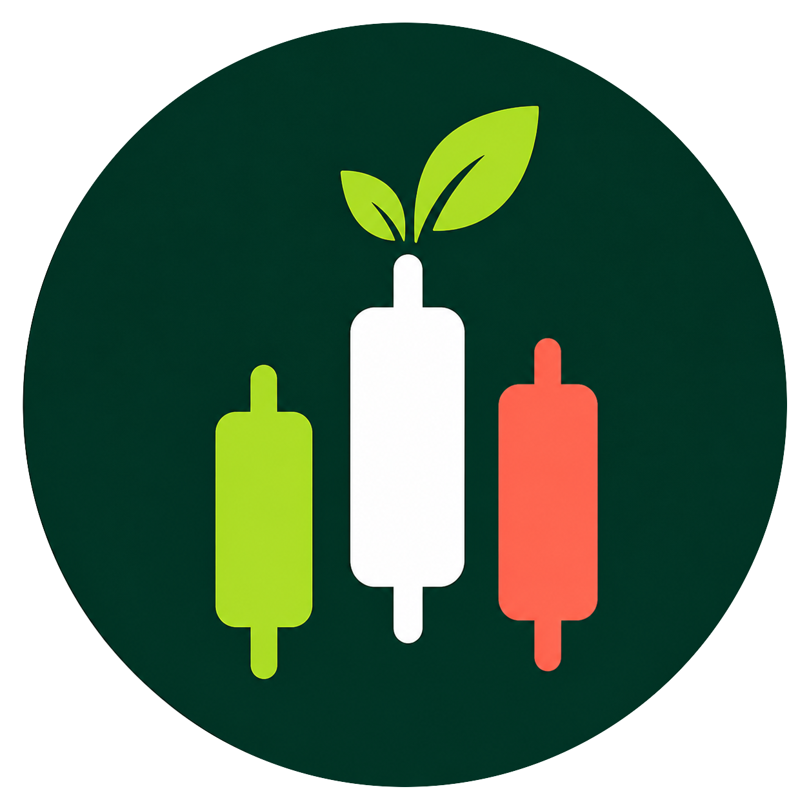
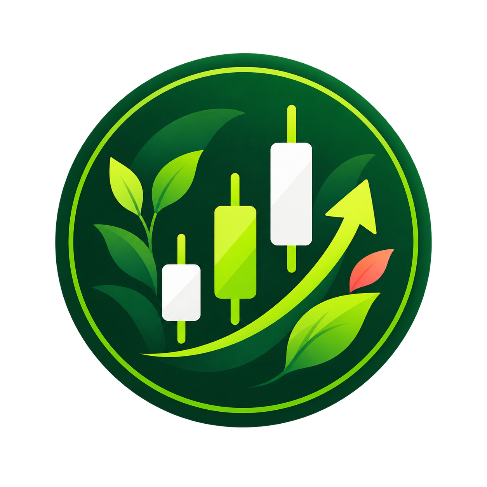

01
Launch a Ticker Meme
Bind a fixed-supply market to one official Stock Token.
Community signal markets
TickerGarden is where stock communities and meme culture meet—creating an open, expressive layer for every ticker story.
On-chain directory
Loading markets from the configured read API…
No markets are available from the configured read API yet.
Market data is locked until the required V1 configuration is deployed.
Simple mechanics
From an eligible Stock Token to a living onchain community.

Bind a fixed-supply market to one official Stock Token.
Curve trading moves into permanently locked liquidity.

After graduation, matching STOCK can share actual market fees.